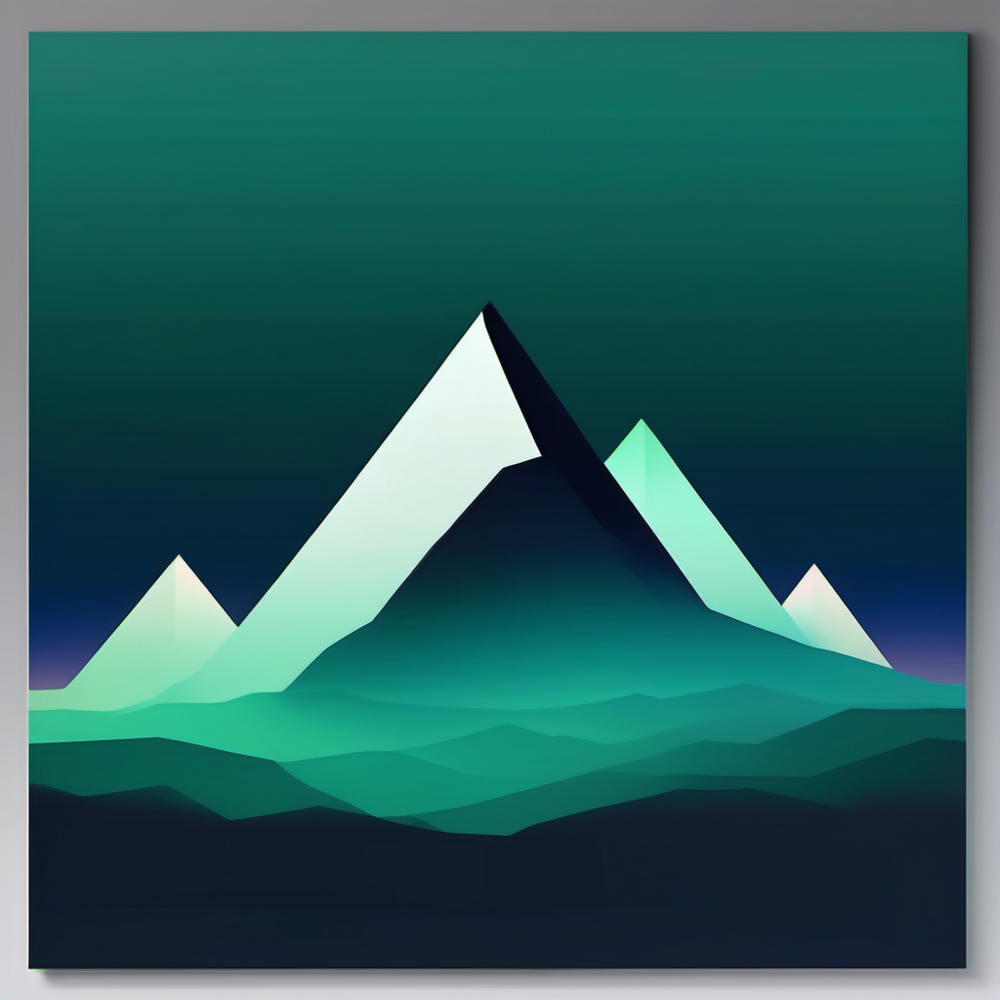
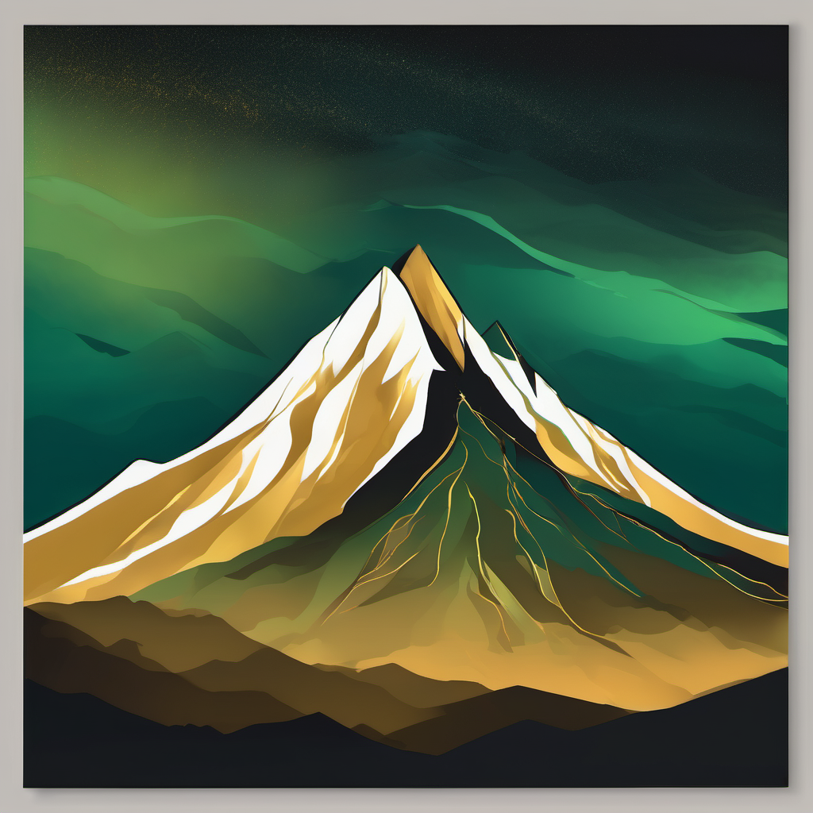
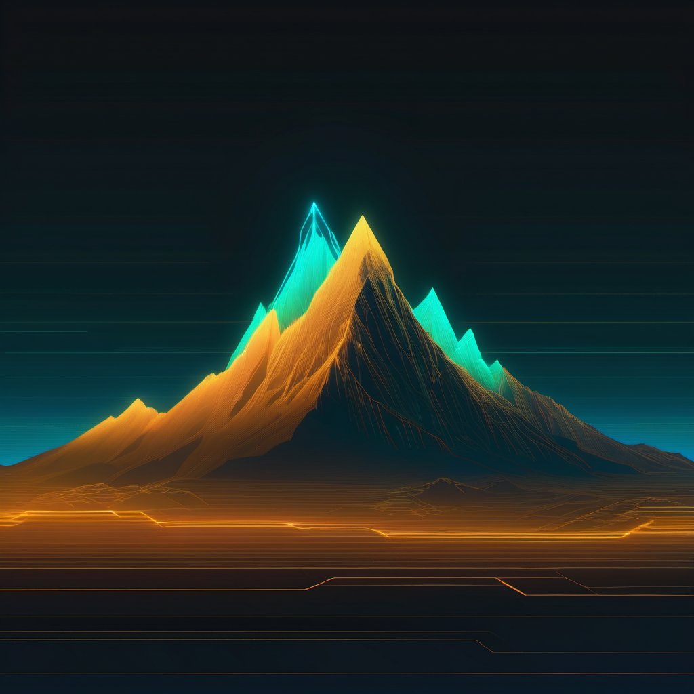

Avança — 3 opções de arte (Nano Banana) + animação + wordmark
Op1 · Constância

A
van
ç
a
Animação:
pulse
(respira no pico) · Montanha minimalista duotone
Op2 · Conquista

A
van
ç
a
Animação:
shimmer
(luz âmbar atravessa) · Glow no topo
Op3 · Tech

A
van
ç
a
Animação:
float
(névoa sobe) · Montanha de circuitos